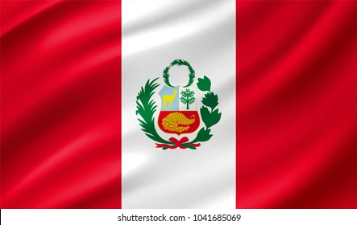

About Me
Hello! My name is Shirley Hatch and I am from Lima, Peru. I am currently living in Arizona. I work as a content creator on social media. I love dancing, spending time with my family and my dog. I started Pathway in March last year and it made a huge impact in my life specially during hard times. I am studing Software Development and I feel so blessed to be able wake up every morning knowing I am one step closer to my goal of getting a degree.
Lima, Peru
10 interesting facts that Peru is known for. 1. Over 70% of the world’s alpaca population lives in Peru. 2. People live on floating islands made of grass. 3. Origin of the potato. 4. Home to one of the Seven Wonders of the World. 5. The ancient art of salt farming. 6. The Amazon River starts in Peru. 7. Peru is known for its food. 8. Peruvian Ponchos. 9. Peru has rainbow-colored mountains. 10. Children’s Hunger Fund has partnerships with 44 churches in Peru.
